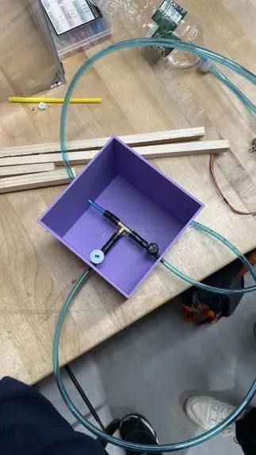
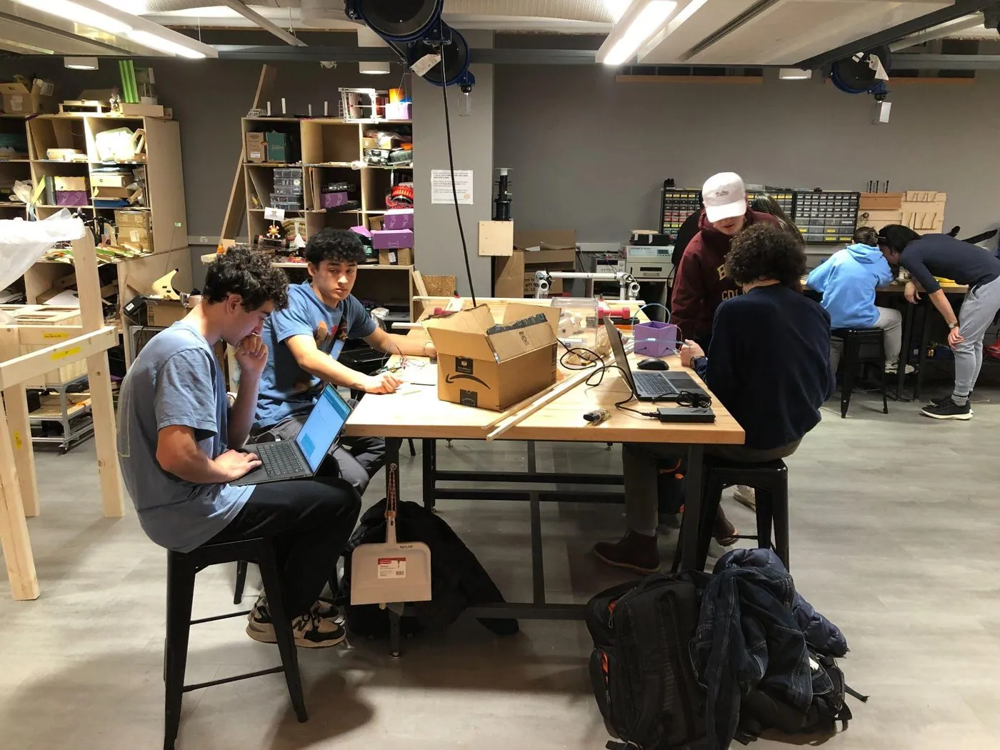
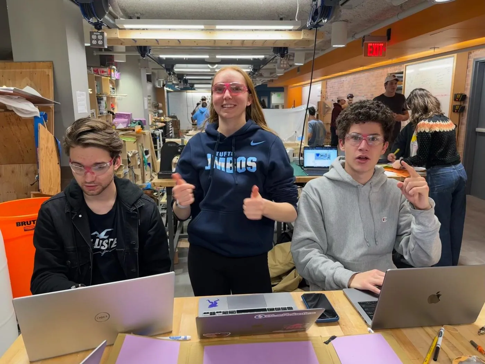
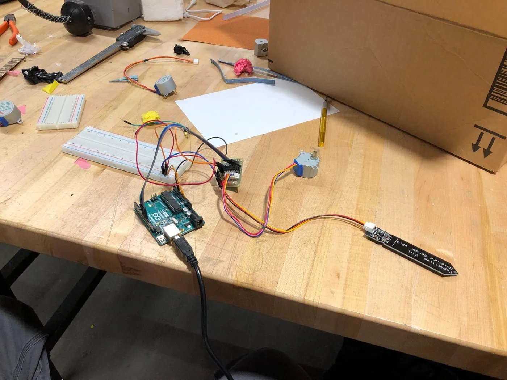
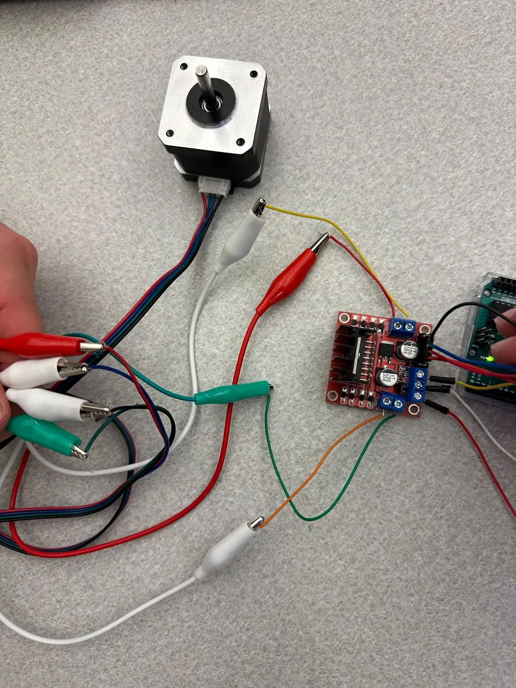
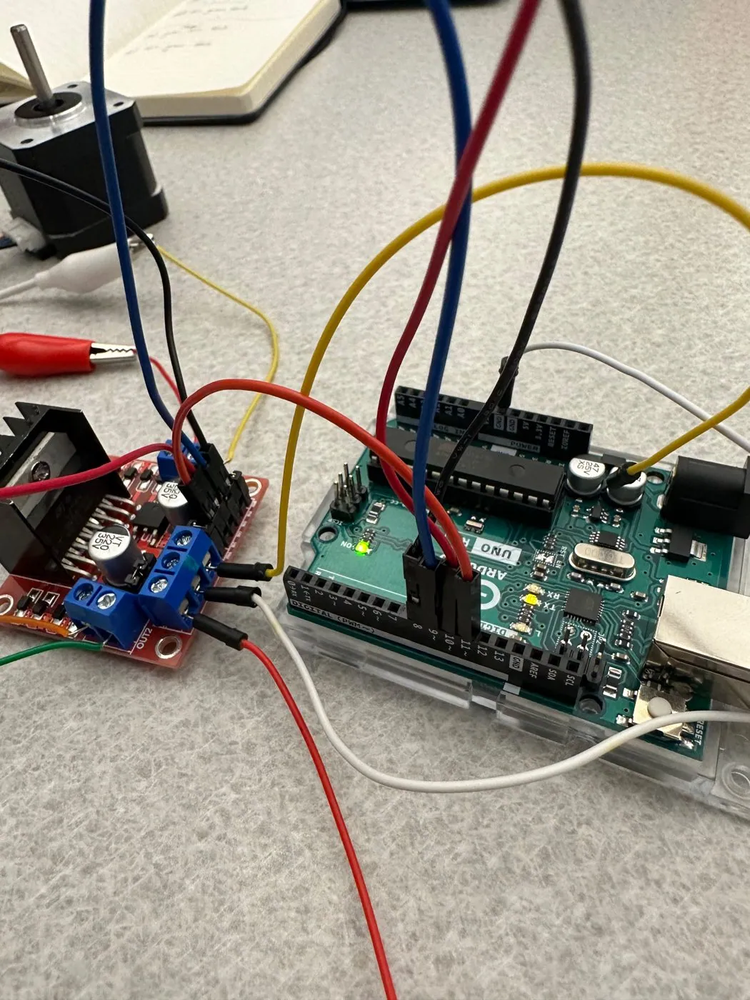

Greenhouse Auto-Watering: “The Cube”
EWB Water Automation group · Fall 2023
EWB’s greenhouse project needed a way to water plants automatically. Our Water Automation group designed “The Cube”: a modular unit that draws water from a central tank when a soil-moisture sensor says the plants need it, and passes water along to the next cube so many units can be chained across a greenhouse.

System Overview
- Water is fed from a central tank using gravity for pressure, so no pump is needed in the basic layout.
- Each cube draws water from the tank based on moisture readings from its soil sensor.
- Cubes are linked to each other, so one supply line can serve a whole row of plants.
A modular unit
- 1 input from the tank or the previous cube.
- 2 outputs: one to water its plant, one that feeds the next cube.
- 2 knobs, one controlling each output.

Design Process
- We split into small groups, and each group came up with its own solution.
- Each group built a prototype and presented it to the team.
- We combined the best ideas into one final prototype.
- We re-split by discipline (electrical, mechanical, presentation) to build it.


Electronics
The control side started with an Arduino test circuit that reads a soil-moisture probe, plus a stepper motor and driver to turn a valve. Getting the stepper running meant writing up a wiring guide for an L298N driver and a NEMA 17 motor, so the next group could rebuild it.



Code: scheduled watering with a pump and two valves (Arduino)
One solution we explored used a DS3231 real-time clock to run a pump and two solenoid valves on a schedule: valve 1 at 6:00 and valve 2 at 18:00, for 30 seconds each, with the pump running two seconds early to build pressure.
#include <Wire.h>
#include <RTClib.h>
RTC_DS3231 rtc;
const int relay1 = 10; // Pin for solenoid valve 1
const int relay2 = 11; // Pin for solenoid valve 2
const int pumpPin = 9; // Pin for the pump relay
void setup() {
pinMode(relay1, OUTPUT);
pinMode(relay2, OUTPUT);
pinMode(pumpPin, OUTPUT);
// Initialize relays and pump as OFF
digitalWrite(relay1, LOW);
digitalWrite(relay2, LOW);
digitalWrite(pumpPin, LOW);
Serial.begin(9600);
if (!rtc.begin()) {
Serial.println("Couldn't find RTC");
while (1);
}
if (rtc.lostPower()) {
Serial.println("RTC lost power, setting the time!");
// Set the time to compile time
rtc.adjust(DateTime(F(__DATE__), F(__TIME__)));
}
Serial.println("System initialized.");
}
void loop() {
DateTime now = rtc.now();
// Print current time
Serial.print("Current time: ");
Serial.print(now.hour());
Serial.print(":");
Serial.print(now.minute());
Serial.print(":");
Serial.println(now.second());
// Check for the first watering time (e.g., 6:00 AM)
if (now.hour() == 6 && now.minute() == 0 && now.second() == 0) {
waterPlants(relay1, 30); // Water using valve 1 for 30 seconds
}
// Check for the second watering time (e.g., 6:00 PM)
if (now.hour() == 18 && now.minute() == 0 && now.second() == 0) {
waterPlants(relay2, 30); // Water using valve 2 for 30 seconds
}
delay(1000); // Wait 1 second
}
void waterPlants(int valvePin, int duration) {
// Turn on the pump
Serial.println("Pump: ON");
digitalWrite(pumpPin, HIGH);
// Brief delay to allow pump to build pressure
delay(2000);
// Turn on the valve
Serial.print("Valve ");
Serial.print(valvePin);
Serial.println(": ON");
digitalWrite(valvePin, HIGH);
// Wait for the specified watering duration
delay(duration * 1000);
// Turn off the valve
Serial.print("Valve ");
Serial.print(valvePin);
Serial.println(": OFF");
digitalWrite(valvePin, LOW);
// Turn off the pump
Serial.println("Pump: OFF");
digitalWrite(pumpPin, LOW);
}
Code: stepper test (Arduino)
#include <Stepper.h>
const int stepsPerRevolution = 200;
Stepper myStepper(stepsPerRevolution, 8, 9, 10, 11);
void setup() {
myStepper.setSpeed(60);
Serial.begin(9600);
}
void loop() {
Serial.println("Clockwise");
myStepper.step(stepsPerRevolution);
delay(500);
Serial.println("Counterclockwise");
myStepper.step(-stepsPerRevolution);
delay(500);
}
Waterproofing
Electronics and water share the same box, so we researched ways to seal the sensor and wiring: heat-shrink tubing, epoxy potting, O-rings, and vinyl, PVC and wire tubing for routing.
Future Goals
- Longevity: last years without major intervention.
- Accuracy: consistently give plants what they need.
- Efficiency: use as little water and energy as possible.
- Scalability: many cubes working together in the final greenhouse.
We also planned to “Malawify” the cubes, decorating the sides with Malawian designs and facts about water access, to connect the greenhouse to EWB’s borehole work in Malawi. Most of rural Malawi gathers water from rivers or, where they exist, boreholes, and irrigation relies largely on canal-fed sprinklers and labor-intensive pumps.
Reflections
The group’s end-of-semester notes were mostly about people. Keep members engaged, prepare even when a task seems straightforward, and set weekly tasks and deliverables to keep the project on track.